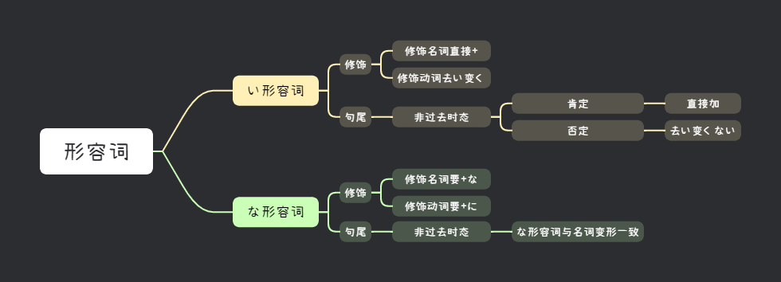

📖 みんなの日本語 第八課
形容詞｜な形容詞・い形容詞・比較・疑問

文法 ①
形容词的分类
日语形容词分为两类：な形容词（形容动词）和 い形容词（形容词）。
| 类型 | 特点 | 例子 |
|---|---|---|
| な形容词 | 词干 + な + 名词 | 親切・便利・静か・賑やか |
| い形容词 | 以「い」结尾 | 高い・安い・楽しい・面白い |
💡 注意：きれい（漂亮）、嫌い（讨厌）虽然以「い」结尾，但是な形容词。
文法 ②
形容词作谓语
| な形容词 | い形容词 | |
|---|---|---|
| 非过去肯定 | 親切です | 高いです |
| 非过去否定 | 親切じゃありません | 高くないです |
この町は静かです。→ 这个城市很安静。
この町は静かじゃありません。→ 这个城市不安静。
富士山は高いです。→ 富士山很高。
富士山は高くないです。→ 富士山不高。
💡 な形容词：词干 + です/じゃありません
💡 い形容词：去「い」+ くないです
💡 い形容词：去「い」+ くないです
文法 ③
形容词修饰名词
な形容词 + な + 名词
い形容词 + 名词
い形容词 + 名词
李さんは親切な人です。→ 小李是个亲切的人。
富士山は高い山です。→ 富士山是座很高的山。
文法 ④
〜が、〜（转折）
〜が、〜
意义：表示转折，相当于“虽然…但是…”。
日本の食べ物は美味しいですが、高いです。→ 日本的食物很好吃，但是很贵。
文法 ⑤
とても / あまり
とても + 肯定：非常…
あまり + 否定：不太…
あまり + 否定：不太…
北京はとても寒いです。→ 北京非常冷。
上海はあまり寒くないです。→ 上海不太冷。
文法 ⑥
〜はどうですか
N + はどうですか
意义：询问意见、印象或感想。
このレストランはどうですか。→ 这个餐厅怎么样？
美味しいです。→ 很好吃。
文法 ⑦
どんな + 名词
どんな + N + ですか
意义：询问人/物的状态或性质，“什么样的…”。
東京はどんな都市ですか。→ 东京是个什么样的城市？
賑やかな都市です。→ 是个热闹的城市。
文法 ⑧
そうですね（思考中）
意义：表示说话人正在思考对方的问题（与第五课的认同用法不同）。
お仕事はどうですか。→ 工作怎么样？
そうですね…忙しいですが、面白いです。→ 嗯…虽然忙，但是很有趣。
💡 区别：第五课的「そうですね」表示认同（是啊）；这一课表示思考（嗯…让我想想）。
📌 第八課 キーワード
親切静か賑やか
高い安い楽しい
面白いとてもあまり
どんなどうですか
📖 语法核心：な形容詞・い形容詞・修饰名词・转折が・とても/あまり・どんな